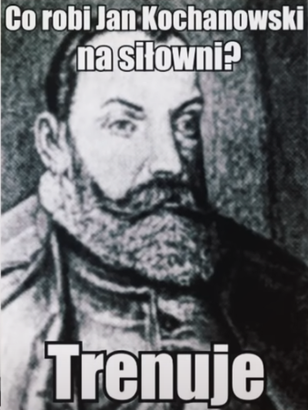
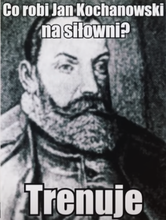
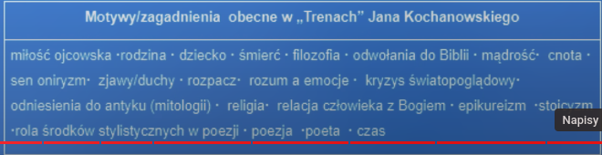
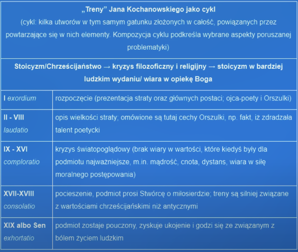
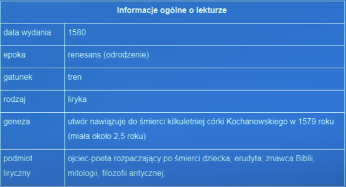
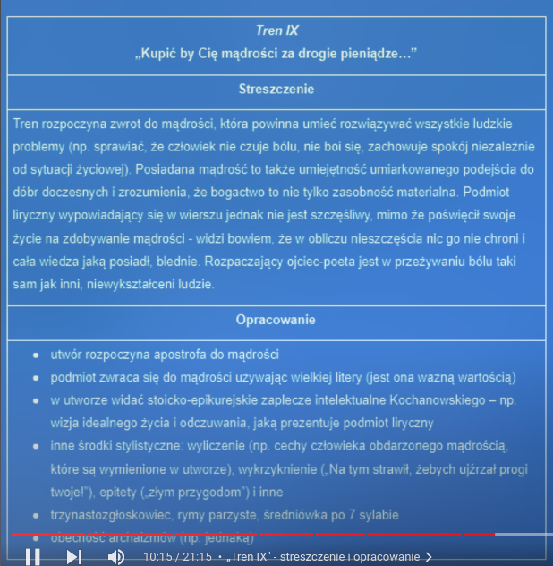
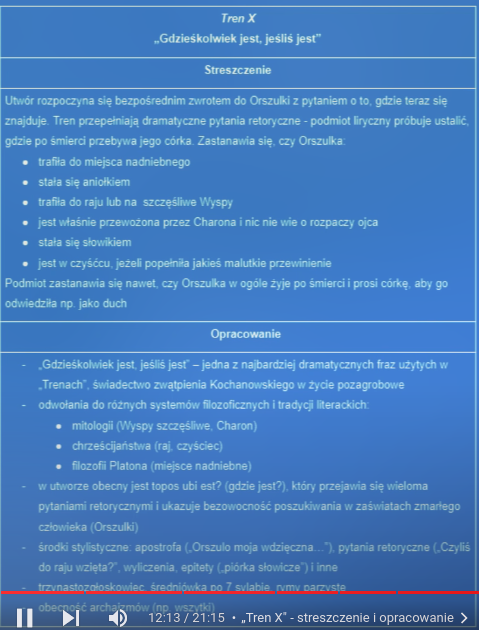
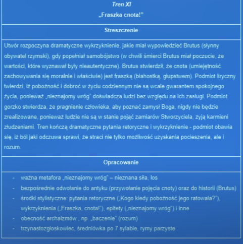
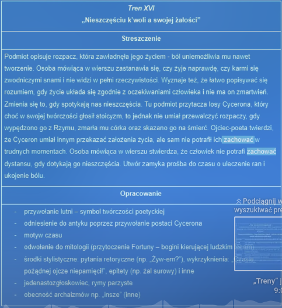
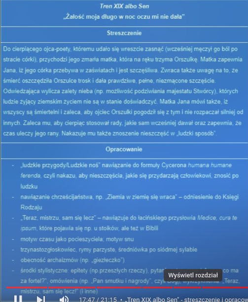

- Francesco Petrarca
- Dante Alighieri
- Giovanni Boccaccio
- stoicyzm -> zachowanie dystansu i umiarkowanej postawy w obliczu nieszczęć, jak i radości.
- epikureizm -> dążenie do przyjemności oraz radości z bieżącej chwili, ,,carpe diem!"
- złoty środek -> połączenie stoicyzmu i epikureizmu
- Alegoria -> stała metafora w tekście
- Porównania -> istnieją by łatwiej było sobie coś wyobraźić
- Inwersje -> zmiana szyku zdania
- Apostrofy -> bezpośredni wzrot do adresata
- Pytania retoryczne -> pytania, na które nie trzeba odpowiadać, ponieważ odpowiedź jest wiadoma, logiczna
- Retoryka -> sztuka pięknego, logicznego wypowiadania się
- Kazanie -> przemowa, odczyt, gatunek, kazanie może wygłaszać tylko osoba duchowna, chce przekazać informacje, jest to tekst pouczający.
- Kompozycja -> tekst ironiczny
- Treny -> literacka terapia dla poetów, gatunek literacki wywodzący się z Antyku, pisany ku czci zmarłym
- Funckje "Chorusu" -> zapowiedź, podsumowanie, komunikat
- DECORUM -> treść + styl [poważny]
- Antropocentryzm -> człowiek jest w centrum uwagi
Informacje o trenach:
       Informacje o pieśniach:
,,Czego chcesz od nas Panie?" ~ Ja żelków chcem!!!
Podmiot liryczny, czyli „ja” mówiące, wypowiada się w tym utworze w imieniu zbiorowości ludzi wierzących, wyrażając jej uczucia. Wypowiedź swą kieruje do wskazanego w apostrofie „Pana”, „nieśmiertelnego Pana”, czyli Boga. Jest to liryka inwokacyjna o tematyce religijno-filozoficznej, ma charakter hymnu na cześć Boga i Jego dzieła - Bóg jest w wierszu na pierwszym planie. Właśnie poprzez dzieło stworzone przez Boga objawia się Jego wielkość. Poeta stworzył obraz Stwórcy.
Według podmiotu lirycznego Bóg to: „pan wszytkiego świata” - najwyższy władca, „Tyś niebo zbudował” - stwórca świata, kreator, architekt, „Za twoim rozkazaniem w brzegach morze stoi” - wszechmocny władca świata, „Tobie k’woli rozliczne kwiatki Wiosna rodzi...” (przenośnia - uosobienie pór roku) - pan natury, „Z Twej łaski nocna rosa na mdłe zioła padnie...” - opiekun i dobroczyńca.
Bóg został w pieśni obdarzony epitetem „nieśmiertelny” - wieczny, nieskończony, nieobjęty, bez granic, bez początku i końca. Człowiek nie jest w stanie pojąć jego wielkości i potęgi „(...) Kościół Cię nie ogarnie, wszędy pełno Ciebie...”. Jest istotą niepojętą dla człowieka, więc nie został opisany jako człowiek, mimo że zostały mu nadane „ludzkie cechy” (tak naprawdę te cechy są przeciwne ludzkim - nieśmiertelność Boga - śmiertelność człowieka; wszechobecność Boga - ograniczenie człowieka itp.).
Wielkość i wszechmoc Boga potwierdza ukazany w wierszu obraz świata. Świat jest uporządkowany, panuje w nim harmonijna równowaga (zwrotki IV, V). Jest zarazem piękny, ogromny i różnorodny (zwrotka III). Boska opieka zapewnia mu stabilność i bezpieczeństwo (zwrotka VI). Kochanowski opisał piękno świata za pomocą barwnych epitetów: „złote gwiazdy”, „nieobeszła (niezmierzona) ziemia”, „rozliczne zioła”, „wody nieprzebrane”. W tym świecie człowiek czuje dobroć, łaskę i akceptuje Boga. Stąd szczęście i przekonanie, że ludzką powinnością jest chwalić Boga - swego Stwórcę i Pana: „Wdzięcznym Cię tedy sercem, Panie, wyznawamy, / Bo nad to przystojniejszej ofiary nie mamy”.
Harmonijność obrazu podkreślają środki artystyczne i wersyfikacyjne użyte przez poetę:
- siedem czterowersowych strof, jednakowa liczba sylab w wersie (13),
- stała średniówka (czyli przedział intonacyjny, czytając, robimy w tym miejscu krótką pauzę) po siódmej sylabie (7 + 6),
- stały akcent na przedostatniej sylabie wersu,
- regularne rymy żeńskie.
Tekst nadaje się do śpiewania dzięki regularnej budowie, wyraźnemu rytmowi - na tym polega jego muzyczność. Ze względu na treść można go uznać za modlitwę dziękczynną. Pod względem gatunkowym jest to hymn - odmiana pieśni.